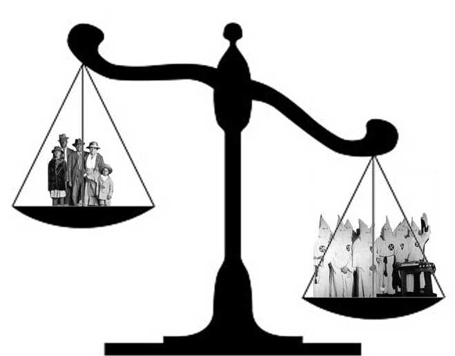

Demokrasi
"Demokrasi, halkın halk tarafından halk için idaresidir." -Abraham Lincoln Demokrasi, etinolojik kökeni grekçe demokratia olan demos(halk) ve kratos(iktidar) sözcüklerinden oluşur. Anlamı halkın gücü, halkın iktidarıdır. Demokrasi ilk olarak Antik Yunan’ın site devletlerinden biri olan Atina’da ortaya çıkmıştır. Bu sistemde vatandaşlar site adı verilen devletlerin yönetimlerine ilişkin kararlarını verirler ve bu yönetimin nasıl olmasını istediklerine göre oy kullanırlardı. Fakat bu dönemde oy vermek için bazı kısıtlamalar mevcuttu.
Devamını Oku...